SAIL：带 LP 指导的状态亲和插入式多智能体 LLM 工作流调度
摘要。多智能体 LLM 应用越来越以 workflow 的形式运行：相互依赖的任务分布到异构 inference executors 上执行，并产生可复用的运行时状态，例如 KV-cache 或 prefix state。调度这类 workflow 很困难，因为一次 placement 决策不仅决定某个任务何时、何处执行，还决定可复用状态在哪里生成，以及下游任务如何在不同 reuse mode 之间取舍。本文把这一问题形式化为状态感知的异构 DAG 调度问题，同时刻画 executor 异构性、executor 间通信以及带访问延迟的可选状态复用，并证明其判定版本是强 NP-complete，从而推出 makespan 最小化是强 NP-hard。随后，本文提出 LP-guided State-Affinity Insertion Scheduling（SAI-LP）：它先求解一个 LP 松弛来估计任务 criticality 和 reuse tendency，再对每个 ready task 联合选择 executor、插入位置和 reuse mode 来构造可行 schedule，最后对当前决定 makespan 的 executor 做轻量 refinement。由于把 reuse mode 纳入构造过程，SAI-LP 能在 critical path 上用更晚开始换取更便宜的 reuse，这是固定成本调度器做不到的。实验显示，在 synthetic 和 model-level benchmark 上，SAI-LP 的 aggregate normalized makespan 为 0.903，而 Cold-EFT 为 1.000、HEFT-Cold 为 0.956；同时它能保持与 reuse-aware heuristics 竞争，并显著减少 remote state movement。
关键词。LLM 系统；DAG scheduling；KV-cache locality；restricted assignment。
1 引言
大语言模型（LLM）应用越来越不是孤立的单次 model call，而是多智能体 workflow。AutoGen、DSPy、LLMCompiler 等框架把这类应用表示成结构化对话、pipeline 或 computation graph，组合 reasoning、retrieval、tool use 和 aggregation。一个用户目标会被拆成多个相互依赖的步骤，中间输出继续供后续步骤使用。因此，端到端 latency 不仅取决于单个 LLM request 的 serving time，还取决于整个 workflow 如何在 inference executors 之间协调执行。
这种执行模型天然形成 DAG：节点表示 execution step，边表示 data dependency。某个任务只有在前驱完成且前驱输出可用后才能开始。同时，inference executors 在 batching 行为、内存和 KV-cache 容量、模型部署以及并行 serving 配置上是异构的。因此每个任务都有 executor eligibility 约束：它只能在满足模型、上下文长度和容量要求的 executor 上执行，即使满足约束，processing time 也可能因 executor 不同而不同。这已经使 LLM-agent workflow execution 比把独立请求派给最空闲 backend 更难。
真正特殊的挑战来自可复用运行时状态。任务在 executor 上执行时，可能产生 KV-cache 或 prefix state，加速后续任务。这个状态的收益取决于它在哪里产生、consumer 被调度到哪里，以及访问该状态是否比 cold execution 更便宜。因此 placement 决策影响的不只是当前任务完成时间；它还决定可复用状态的位置、下游任务是否能本地或远程复用、以及 reuse 如何改变后续任务的 start time 和 execution cost。这种由 state 诱导的耦合，使 reuse 成为 workflow-level scheduling decision，而不是底层 cache manager 的偶然副作用。
已有工作没有捕捉这种耦合。LLM serving system 通过 KV-cache management、prefill/decode disaggregation 等优化 request-level execution，但不决定整个 workflow 在 cluster 上如何 placement。LLM programming 和 agent frameworks 暴露 workflow structure，却把 executor placement 和 state locality 留在调度问题之外。经典 heterogeneous DAG scheduling 与 restricted-assignment scheduling 可以建模 precedence、executor heterogeneity 和 eligibility，但通常假设 task 一旦选择 executor，其 execution cost 就固定。该假设在 LLM-agent workflow 中不成立，因为计算会生成可复用状态，而上游 placement 会改变下游 task 的成本地形。
本文核心观点是：可复用 state 应作为一等调度决策，而不能被视为 placement 之后的 cache effect。因此，我们把 LLM-agent workflow scheduling 建模为 state-aware heterogeneous DAG scheduling problem：调度器在 precedence、eligibility、communication 和 state-access 约束下，联合决定 task placement、executor-local ordering 和 reuse mode，目标是最小化 workflow makespan。由于 placement、ordering 和 reuse 决策在 workflow 内相互作用，该问题计算上很困难。我们证明即使没有 data-dependency edges，reuse selection 本身也会导致强 NP-completeness，从而 makespan minimization 是强 NP-hard。
为高效求解大规模实例，我们提出 SAI-LP。SAI-LP 先求解 LP relaxation，得到关于 task criticality、placement preference 和 reuse tendency 的全局指导；然后通过 state-affinity insertion 构造可行 schedule，对每个 ready task 联合选择 eligible executor、插入位置和 reuse mode；最后用 lightweight critical-machine refinement 改善当前决定 makespan 的 executor。这样，SAI-LP 把全局优化指导、可扩展的构造式调度和有针对性的瓶颈修复结合起来。
本文贡献如下：
- 把 LLM-agent workflow scheduling 形式化为状态感知异构 DAG 调度问题，包含 executor eligibility 与 reuse-dependent downstream costs；证明其判定版本强 NP-complete，并推出 makespan minimization 强 NP-hard。
- 提出 SAI-LP，这是一种 LP-guided constructive scheduler，用松弛后的全局信息指导 state-affinity insertion，并对每个 ready task 联合选择 executor、插入位置与 reuse mode。
- 引入轻量 critical-machine refinement，将 local search 聚焦在当前决定 makespan 的 executor 上，直接攻击 workflow bottleneck。
- 在 controlled synthetic 与 model-level workflow benchmark 上验证 SAI-LP 优于 cold-only scheduling；在论文的主要实验中，SAI-LP 的 aggregate normalized makespan 明显低于 Cold-EFT，并与强 reuse-aware baseline 保持竞争。
2 背景与动机
2.1 LLM-agent workflow 作为 execution DAG
DSPy、AutoGen、ReAct、LLMCompiler 等框架把 LLM 应用表示为 model call、tool invocation 和 control logic 的结构化组合。这些应用将用户目标拆成 planning、retrieval、tool use、verification、final synthesis 等依赖步骤。从调度角度看，这类应用可以表示为 DAG：节点表示 workflow step，有向边表示硬 data dependency，即下游步骤必须等待上游结果生成并传递完成后才能开始。
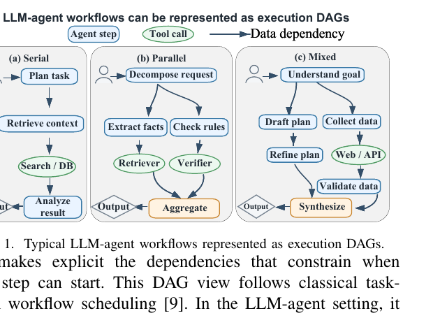
DAG 抽象为这些模式提供统一执行模型，并明确约束每个 step 何时可开始。在 LLM-agent 场景中，一个请求可能同时包含串行 reasoning、并行 tool-augmented branches 和后续 aggregation，因此 DAG 视角尤其有用。但 DAG 抽象只捕捉强制 data dependency；它提供 workflow scheduling 的基础执行结构，却不能描述某个 step 生成的 runtime state 如何影响后续 step 的 execution cost。
2.2 状态复用是一种调度因素
这个限制很重要，因为 LLM-agent workflow 中的 task 可以为后续 task 产生可复用 runtime state，通常是 KV-cache 或 prefix state。即使两个任务之间没有直接 data-dependency edge，下游 task 也可能通过复用上游 task 产生的 state 更快执行。vLLM 和 SGLang 利用 shared prefixes 减少重复计算；DistServe、Splitwise、TetriInfer、Mooncake 等则说明在 phase disaggregation 下，state 的生产和消费位置很重要。
调度上的后果是：如果 reuse 完全交给 serving runtime，workflow scheduler 只能看到固定 task cost 和普通 precedence constraint。这个抽象对 Orca 或 vLLM 这类 request-centric 系统通常足够，因为它们优化 batching、memory use 或 phase scheduling；但对 workflow-level scheduling 不够，因为上游 task 的 placement 决定 reusable state 生成在哪里，也决定下游 reuse 代价。
由此产生的耦合会让局部看似合理的决策变得不可靠。调度器可能把 ready task 送到最早可用 executor，却丢掉后续 critical task 的 cheap reuse。因此 state locality 不能被当作 placement 之后的 cache effect，而必须与 task placement 和 executor-local ordering 一起考虑。
2.3 动机示例
图 2 展示一个多步骤 LLM-agent workflow，其中同时存在 hard data dependencies 和 optional state-reuse opportunities。实线表示 data dependencies，虚线表示 optional reuse relation。reuse edge 不是 precedence constraint；它只意味着目标 task 可以通过访问源 task 的 KV-cache 或 reusable prefix state 更快运行。比如 v2 → v9 是 reuse opportunity，但不是 data dependency，因此只看 data-dependency graph 的调度器看不到它。
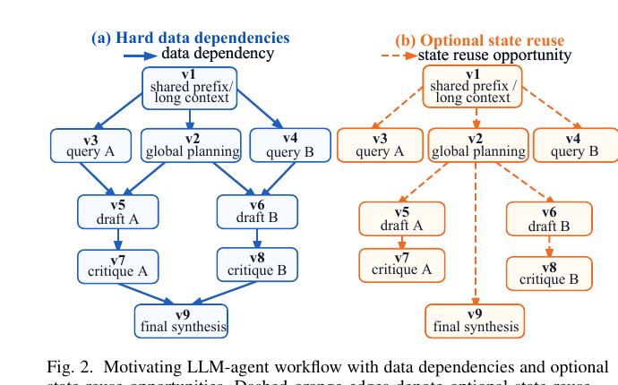
为隔离 state locality 的作用，论文使用三个 executors，令所有 task 都可在所有 executor 上运行，并使用 executor-independent cold execution times。Local state reuse 没有访问延迟，remote reuse 需要额外 state-access delay。普通 data transfer 在同一 executor 上也比跨 executor 更便宜。
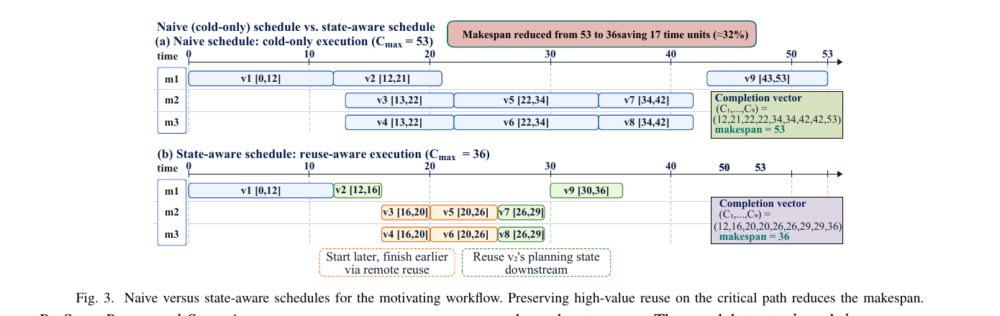
图 3 比较两个可行 schedule。naive schedule 忽略 cache/state，主要根据 executor availability 和普通通信成本放置 ready tasks。这可能让某些 task 更早开始，但也可能把 task 放到没有有用 state 的 executor 上。示例中，把 v2 放到空闲 executor 看起来有吸引力，却让它远离 v1 的 state，并增加 critical path 下游 task 的成本。
state-aware schedule 则保留高价值 reuse chain。它让 v2 留在 m1，本地复用 v1 的 state，随后让后续 task 利用 v2 生成的 planning state。虽然部分 task 更晚开始，但由于 local 或 remote reuse 缩短了执行时间，最终更早完成。结果 makespan 从 53 降到 36，节约 17 个时间单位，约 32%。
这个例子说明 reusable state 必须在 scheduling level 建模。Reuse edge 既不是 mandatory data dependency，也不是简单 co-location requirement。调度器必须在 cold execution、local reuse 和 remote reuse 之间联合选择，同时尊重 data dependency 和 executor availability。
2.4 论文范围
SAIL 目标是在 admitted LLM-agent workflow 执行前做 workflow-level scheduling。这适用于 compiled agent pipelines、planned multi-step reasoning workflows 和 workflow request admission-time scheduling，即 dispatch 前 workflow structure 已知的场景。
给定 workflow DAG、executor eligibility、communication costs 和 candidate state-reuse relations，SAIL 决定 task placement、executor-local ordering 和 reuse mode，也就是决定下游 step 是 cold execution、本地复用 state，还是远程访问 state。
这个范围不同于 serving-engine 内部机制，例如 iteration-level batching、cache eviction、request preemption 和详细 runtime control。那些机制在 request 进入 serving backend 后工作，而 SAIL 位于 serving runtime 之上，决定 reusable state 应在哪里创建、后续 workflow step 如何利用它。该抽象隔离 reusable-state locality 的调度效应，使论文可以研究 upstream placement 如何改变 downstream cost 与 critical-path timing，而不必建模整个 serving stack。
3 问题形式化
论文把异构 inference executors 上的 LLM-agent workflow 调度形式化为 Workflow State-Aware Scheduling（WSAS）问题。workflow 是由 execution steps 和 data dependencies 组成的 DAG。每个 task 只能在满足其 model、memory、context-length 和 hardware requirements 的 executor 上运行；这种 resource compatibility 是硬 feasibility constraint。
State locality 被建模为成本和时序因素，而不是 eligibility constraint。即使某 task 的 useful state 不在选择的 executor 上，它仍然可以 cold run 或远程访问 state。Compatibility 决定 task 能在哪里运行，locality 决定该 assignment 的成本。论文随后给出 mixed-integer linear formulation，并证明即使 reuse selection 是唯一组合自由度，问题仍强 NP-hard。
3.1 Workflow graph 和 executor set
令 \(G_D=(V,E_D)\) 表示一个 LLM-agent workflow DAG，节点 \(u \in V\) 是 generation、reasoning、verification 或 tool use 等 execution step；边 \((u,v)\in E_D\) 是 data dependency，表示 v 必须等 u 完成且输出交付后才能开始。
令 \(M\) 为 executor 集合。executor 是 workflow scheduler 可见的调度单元，例如 serving instance、model replica、GPU worker 或 device group。对 task u 和 executor m，用 \(e^m_u\in\{0,1\}\) 表示 m 是否与 u resource-compatible，并定义 \(M_u=\{m\in M:e^m_u=1\}\)。每个 task 至少有一个 compatible executor，否则实例显然 infeasible。\(M_u\) 抽象了部署与容量限制，包括 model availability、context-length support 和 memory/capacity constraints。对于 eligible pair \((u,m)\)，\(p^{cold}_{u,m}\) 表示没有 reusable state 时 u 在 m 上的 execution time。对于 data edge \((u,v)\)，如果 u 在 executor m 上完成、v 在 executor n 上执行，则输出传输产生 delay \(d^{m,n}_{u,v}\)，同一 executor 的 data flow 延迟约定为 0。
3.2 State reuse 和 state access
除 \(G_D\) 外，论文定义非自反的 optional state-reuse relation \(E_R \subseteq V \times V\)。若 \((r,u)\in E_R\)，表示 task u 可以通过复用 r 产生的 state 更快运行，例如 KV-cache 或 prefix state。与 data edge 不同，reuse edge 不是强制边；被选择后，u 只有在 r 完成且相应 state-access delay 过去后才能复用 r 的 state。被选择的 reuse edges 必须与 mandatory data edges 和 executor-local order edges 共同保持 acyclic。
\(E_D\) 和 \(E_R\) 可以重叠，也可以不重叠。Data dependence 不必然意味着可复用 state；可复用 state 也可能存在于没有 data dependency 的任务之间。Reuse candidates 可在调度前从 workflow structure、shared prompt prefixes 或 application-level annotations 中识别。
对每个 task u，令 \(R_u=\{r:(r,u)\in E_R\}\) 为候选 reusable-state sources。论文限制每个 task 最多选择一个 source；若应用存在多个有用 source，可以选 dominant source 或引入 virtual combined source。优化前，论文删除因果上不可能的候选：如果 \((r,u)\in E_R\) 且 u 在 \(G_D\) 中能到达 r，则选择它会与 u 到 r 的 data path 形成 cycle，因此任何可行 schedule 都不能包含它。
如果 u 在 executor m 上复用 r 的 state，其 execution time 从 cold execution 减少 \(b_{r,u,m}=p^{cold}_{u,m}-p^{warm}_{r,u,m}\)。假设 \(0\le b_{r,u,m}\le p^{cold}_{u,m}\)。如果 r 在 executor n 上运行而 u 在 m 上运行，选中 reuse 会产生 state-access delay \(h^{n,m}_{r,u}\)，其中 local reuse 的 \(h^{m,m}_{r,u}=0\)。实际中，benefit b 和 access delay h 都来自 r 与 u 的 shared-prefix length：b 是在 m 上节省的 prefill cost，h 是从 n 到 m 传输 KV-cache 的时间；shared prefix 越长，两者通常同时增大。
3.3 决策变量与精确模型
论文引入 assignment、state-selection、ordering、acyclicity 和 timing variables。变量只在 compatible executor sets 上定义，因此 \(p^{cold}\)、b、h、d 不会在 ineligible task-executor pair 上求值。
对 task u 和 executor \(m\in M_u\)，binary variable \(z^m_u\) 表示 u 是否分配给 m。对 reuse candidate \((r,u)\)、source executor \(n\in M_r\) 和 receiving executor \(m\in M_u\)，binary variable \(\eta^{n,m}_{r,u}\) 表示 u 在 m 上复用 r 在 n 上产生的 state。若没有任何这样的变量被选中，u cold run。\(y_{r,u}\) 表示 reuse relation 是否被选择，与 placement 解耦。对能共同在 m 上运行的任务，binary variable \(o^m_{u,v}\) 决定它们的局部顺序并防止 overlap。连续变量 \(\theta_u\) 是 topological rank，用于禁止 mandatory data edges、selected reuse edges 和 active executor-local order edges 形成 cycle。最后，\(S_u\)、\(C_u\) 是 start/completion time，T 是 makespan。
精确 MILP 暴露了 placement、reuse、timing、executor-local ordering 和 acyclicity 的耦合。其约束依次完成：每个 task 分配到一个 compatible executor；reuse-selection variables 与 placement 连接并限制每个 task 至多一个 reusable source；completion time 等于 cold execution time 减去选中的 reuse benefit；强制 data dependency 和 selected state-access timing；通过 \(o^m_{u,v}\) 防止 executor overlap；通过 \(\theta\)-rank constraints 要求 mandatory data edges、selected reuse edges 和 active executor-local order edges 共同存在 topological order。
精确模型不是大实例的主求解器，而是用来界定问题语义：它明确说明了哪些决策必须一起做，为什么单独考虑 placement 或单独考虑 reuse 都会失真。
3.4 计算复杂性
定理。WSAS 的判定版本即使在 \(E_D=\emptyset\) 且唯一组合选择是 assignment 与 reuse selection 时也是强 NP-complete；makespan minimization 版本强 NP-hard。
证明思路从 3-Partition 归约。对 3q 个整数构造 q 个 executors；每个整数对应一对 task：integer task \(u_i\) 和 anchor task \(v_i\)。所有 task 都可在所有 executor 上运行，没有 data edges，但有 reuse edge \((v_i,u_i)\)。如果 \(u_i\) 与 \(v_i\) colocate 并本地复用，\(u_i\) 的运行时间对应整数 \(a_i\)；如果 cold run 或跨 executor reuse，成本会超过阈值。于是可在 makespan 阈值内调度，等价于能把整数划分为 q 组三元组，每组和为 B。该归约在 unary encoding 下仍为 polynomial，因此得到强 NP-completeness。
这个结果说明，即使没有 data dependency，assignment 与 reuse selection 也天然耦合；这正是下一节 LP-guided heuristic 的动机。
4 带 LP 指导的状态亲和插入式调度（SAI-LP）
WSAS 同时耦合 assignment、optional state reuse、executor-local ordering 和 timing，直接 mixed-integer optimization 不适合大 workflow。SAI-LP 是一种 constructive heuristic，保留 WSAS 的因果和时序语义。
SAI-LP 分三阶段：先求解 reduced placement-reuse LP，得到 task criticality 和 state-affinity signals；然后重复把 data-ready task 插入某个 executor timeline，同时联合选择 executor、insertion gap 和 reuse mode；最后对负载最重的 executor 做 bounded refinement。Reuse 在整个过程中始终是 optional，任何选中 source 都必须满足 state-availability constraint。
4.1 Schedule 表示与可行性解码
算法把 integral schedule 表示为 skeleton：每个 task u 的 executor \(m_u\)、selected reuse source \(\rho_u\)（\(\bot\) 表示 cold execution），以及每个 executor m 上的 ordered task sequence \(\pi_m\)。该 skeleton 诱导 MILP 中的 integral variables；如果由 data edges、selected reuse arcs 和 executor-order arcs 组成的图 acyclic，则存在可行 topological numbering。
decoder 按该图的 topological order 扫描 tasks。若 \(\rho_u=\bot\)，processing time 为 cold time；否则用 \(p^{cold}_{u,m_u}-b_{\rho_u,u,m_u}\)。state access time 在 cold 情况下为 0，在 reuse 情况下为 source completion time 加上 access delay。u 的 start time 是 0、state access time、所有 data predecessors 的 completion+transfer delay、以及 local predecessor completion time 的最大值。completion time 等于 start time 加 processing time。这个 decoder 在 construction 和每次 refinement tentative move 后都使用，保证全局 timing 一致。
4.2 LP 指导：criticality 与 state affinity
SAI-LP 求解 reduced placement-reuse guidance LP \(P_{LP}\)。它从精确模型中删除 executor-local ordering variables 和相关约束，但保留 assignment、reuse linking、data-precedence timing、selected state-access timing、reuse/data acyclicity ranks、makespan bound 和 aggregate linking inequalities。变量 \(z,\eta,y\) 放松到 [0,1]，\(S,C,T,\theta\) 保持连续。LP 只提供 placement、reuse 和 precedence 的指导，不直接 rounding 成 schedule。
为避免 makespan 项让 fractional \(y\) 退化，论文在 LP objective 中加入小的 reuse-affinity bonus：对具有正 net reuse value 的 reuse arcs 给予奖励，使 \(y^\star\) 成为有意义的 affinity signal，而不是近乎均匀的 tie-breaker。论文使用 \(\tau=0.25\) 和 \(\lambda_R=0.05/\bar p\)，其中 \(\bar p\) 是 instance-mean cold processing time。
从 LP solution 中，算法估计每个 task 的 processing time、每条 data edge 的 expected communication，进而在 DAG 上计算 upward criticality rank \(L_u\) 和 tail \(tail_u\)。对每个 reuse candidate \((r,u)\)，LP-derived reuse affinity \(\alpha_{r,u}\) 来自 relaxed reuse variables；同时计算 source r 的 downstream producer credit \(A^{out}_r\)，估计早调度 r 的下游价值。这些量是 LP-derived priorities，不是概率。
对 scheduled set S 和 candidate reuse choice \(\rho\)，算法还定义 unavailable-affinity penalty \(\Omega_u(S,\rho)\)，惩罚在 LP-valued reuse source 尚未可用前过早调度 u；如果没有 LP 认为有价值的未调度 source，该项为 0。
4.3 State-affinity insertion construction
construction stage 维护 partial skeleton 和 scheduled set S。若所有 mandatory data predecessors 都已经 scheduled，则 task 是 data-ready。每轮算法先从 ready set 中选择一个 task，再联合选择其 executor、insertion gap 和 reuse mode。
在 ready tasks 中，SAI-LP 用 upward rank 加 LP producer credit 选择下一个 task：优先 \(L_u+\beta A^{out}_u\) 大者；tie-breaker 是更小的 eligible executor 数量和更小 task index。把 task selection 和 placement 分开，可以避免直接用 fractional LP tails 排序带来的冲突。
对选中的 task u，算法枚举所有 eligible executor m、所有 reuse mode \(\rho \in \{\bot\}\cup(R_u\cap S)\)，以及 m 的 timeline 中每个 insertion gap。对每个候选 \((u,m,\rho,a,s)\)，计算 data readiness time、state access readiness time、processing time、candidate start/completion time。如果插入不破坏 acyclicity，且若存在本地 successor s 时不推迟 s，则该 insertion feasible。
SAI-LP 最小化一个 state-affinity score \(\Phi\)。它同时控制当前和下游 makespan risk、惩罚在 LP-valued sources 之前调度、奖励高价值 producer、偏好 local reuse co-location，并奖励 net-positive reuse。默认权重固定见表 1。
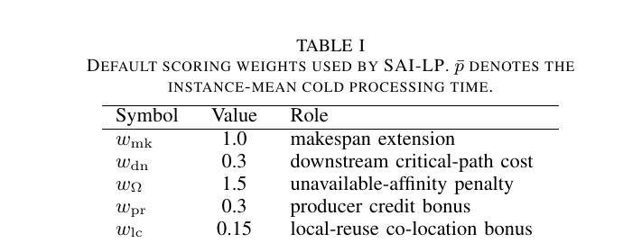
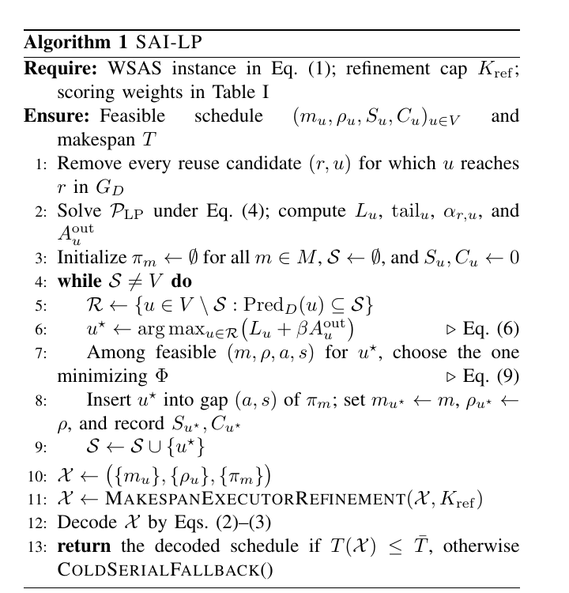
4.4 Bounded makespan-executor refinement
构造阶段是 greedy：task 一旦插入，其 executor、position 和 reuse source 就被固定。refinement 用完整 decoder 验证每个 tentative move，修复早期选择。每次迭代，算法 decode 当前 skeleton，找出 cumulative processing load 最大的两个 executors，并从它们各自 timeline 中选出若干具有最大 \(C_u+tail_u\) 的 focus tasks。对于这些 task，算法尝试删除它、枚举所有 eligible executor、gap 和 reuse choice，接受能严格改善 makespan 的最佳 feasible decoded skeleton。这样可以在 critical executor 和 second-most-loaded executor 之间迁移工作。循环最多执行 \(K_{ref}=2\) 次，或没有 improving move 时停止。
可行性证明依赖一个 invariant：partial skeleton 可解码、已记录时间是 earliest-start、每个 scheduled task 的 data predecessors 已在 S 中、selected reuse source 已经 scheduled。data-ready set 非空由 DAG acyclicity 保证；cold tail insertion 总可行；每次选中的 insertion 都通过 cycle test 与 gap condition，因此 invariant 保持。refinement 只接受 feasible decoded skeleton，最终 fallback 又保证 upper-bound convention，因此算法总返回满足 WSAS 约束的 schedule。
论文还定义三个 ablation variants：SAI-NoLP 用 HEFT-style upward ranks 和 closed-form affinity estimates 代替 LP solution；SAI-NoAffinity 禁用 insertion mechanism，只把 task append 到 executor tail；SAI-NoRef 保留 LP guidance 与 insertion 但跳过 refinement。三者分别隔离 LP signal、insertion mechanism 和 local repair 的贡献。
5 实验评估
5.1 基于真实系统测量的 workload 生成
每个实验实例都是 synthetic workflow，但 timing parameters 来自 production LLM serving stacks 的测量，而不是任意随机数。论文使用 vLLM、SGLang、Sarathi-Serve 论文中的 prefill/decode throughput；使用校准到 Llama-class 7B、13B、70B 配置的 per-token KV-cache sizes；并用两 rack 网络建模，rack 内带宽 6.25 GB/s，rack 间带宽 0.125 GB/s。六个 executors 被放成一个 rack 内两个 NVLink pair、另一个 rack 内一个 NVLink pair，以及两个 stand-alone instances，从而形成既有快 reuse path 也有慢 reuse path 的异构拓扑。
对每个 task，论文抽样 prefix length 和 generation length，选择 model tier，产生 cold processing time。reuse benefit b 和 state access delay h 都随 shared-prefix length 增长，其中 h 还随 cross-rack distance 和 KV footprint 增长。reuse candidates 由两条规则生成：data edge 可能成为 reuse candidate；共享 root prefix 的无关 task pair 也可能成为 candidate。Eligibility 使平均每个 task 与约一半 executors compatible，反映 model 与 memory constraints。
默认实验包含五类 workflow family：chain、fork-join、layered、mixed、random DAG；task counts \(N \in \{20,40,60,80,100,150\}\)，每种配置 30 个 random seeds。论文报告 normalized makespan \(T_{alg}/T_{Cold-EFT}\)，小于 1 表示优于 cold-only EFT baseline。
5.2 对比方法
论文比较 SAI-LP 与两种 cold-only baselines、两种 reuse-aware heuristics、一个 SOTA-inspired baseline 和三个 ablations。Cold-EFT 与 HEFT-Cold 忽略 reusable state。Reuse-Greedy 在每次 placement 时从 cold、local reuse、remote reuse 中选择 immediate best。Local-Reuse-First 只接受 source state 已在本地 executor 上的 reuse。Astraea-HRRN 是对近期 LLM agents state-aware engine 的 policy-level adaptation，作为 SOTA-inspired reference，而不是完整复现。SAI-NoLP、SAI-NoAffinity、SAI-NoRef 分别去掉 LP、state-affinity insertion、refinement。
5.3 总体性能
图 4 给出主 benchmark。SAI-LP 在 aggregate normalized makespan 上取得 0.903，而 Cold-EFT 为 1.000、HEFT-Cold 为 0.956、Reuse-Greedy 为 0.905。SAI-LP 与强 reuse-aware heuristic 基本持平并略优，说明 LP guidance 和 state-affinity insertion 能捕捉 cold-only 方法看不到的 state value。收益在 layered、mixed、random DAG 等包含更多并行 ready tasks 和非局部 reuse 的 family 上更明显。
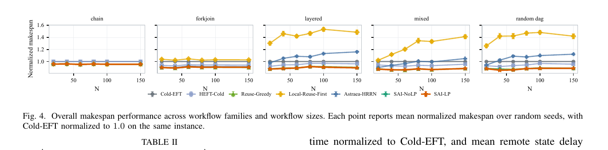
5.4 消融与 reuse 行为
表 2 分离各算法组件贡献。完整 SAI-LP 在 ablation column 中达到 0.903。去掉 affinity-aware insertion score 的损失最大；去掉 refinement 和去掉 LP guidance 也会变差，但幅度较小。说明最终 placement/reuse 选择主要由 ordering 和 state-affinity insertion 产生，refinement 修复 critical executor 上的早期承诺，LP 主要通过 score function 提供偏置。
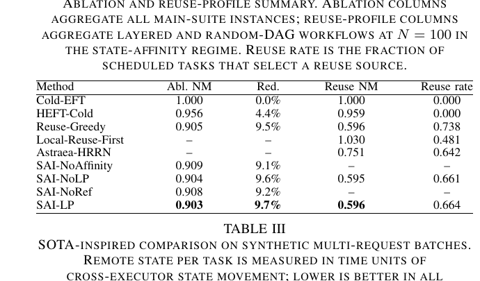
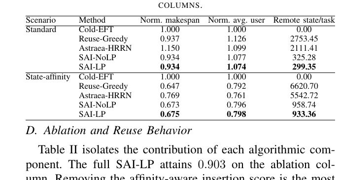
reuse-profile column 平均的是 high-reuse regime，在该 regime 中所有 reuse-aware methods 都显著压缩 makespan。SAI-LP 和 Reuse-Greedy 均约为 0.596，而 Local-Reuse-First 为 1.030。Reuse rate 展示了方法差异：Reuse-Greedy 使用 reuse 的比例更高，而 SAI-LP 以更低 reuse rate 达到相近 makespan，说明 LP-guided score 会跳过一部分对 critical path 不划算的 reuse opportunities。
表 3 比较 batch makespan、mean per-workflow user time 和每 task 产生的 remote state delay。SAI-LP 在 batch makespan 上与 Reuse-Greedy 竞争，同时大幅降低 remote state movement。这个结果说明 SAI-LP 不是盲目追求 immediate reuse，而是在 makespan 与 state movement 之间做更有策略的折中。
5.5 SOTA-inspired multi-request comparison
synthetic multi-request batches 在 time zero 接收四个 workflows，并报告 mean batch makespan、mean per-workflow user time 和 mean remote state delay。图 5 和表 3 显示，在 standard batch 和 state-affinity batch 中，SAI-LP 均能保持有竞争力的 makespan，并显著减少 remote state movement。相比 Astraea-HRRN，SAI-LP 的定位更像 admission-time state-affinity planner，可补充 online fairness-aware schedulers，而不是完全替代它们。
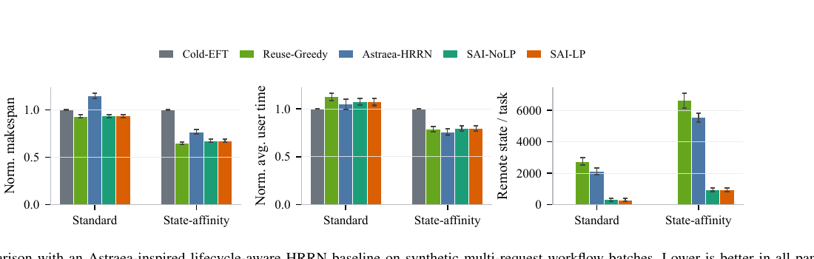
5.6 敏感性、开销与案例
图 6 围绕默认配置扫描四个 workload 轴：reuse density、reuse benefit、remote state-access penalty 和 executor eligibility。Reuse-aware methods 随 reuse density 增加而改善。reuse-benefit sweep 最敏感：shared prefix 更长时，reuse 更有价值。remote-penalty sweep 对 reuse-aware methods 影响较平，因为这些方法已经适应了默认较严的 cross-rack bandwidth。executor eligibility 越严格，large-model tasks 可选 executor 越少，makespan 上升，但 SAI-LP 始终优于 HEFT-Cold。
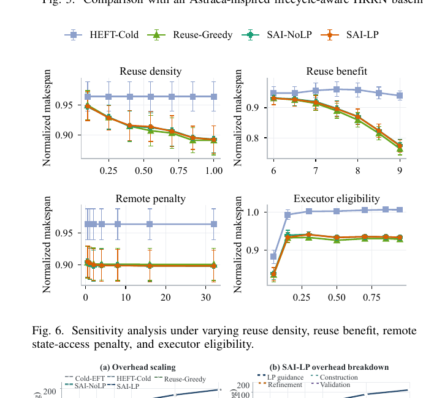
图 7 报告 admission-time scheduling overhead。SAI-LP 在 N=20 时平均 38.8 ms，N=80 时 433.5 ms，N=150 时 1467 ms，N=200 时 3.58 s。开销主要来自 LP guidance 和 insertion search。该成本在 admission 时一次性支付，不是按 token 或 request 的 tight inner loop 成本，因此更适合 compiled 或 admission-time pipelines。
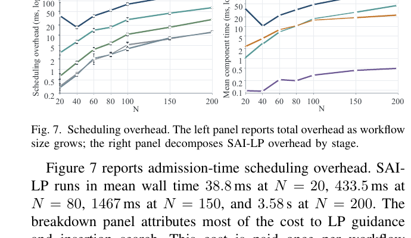
图 8 展示一个代表性实例：Cold-EFT 的 makespan 为 1106.0，SAI-LP 为 854.3，降低 23%。定性模式与 aggregate behavior 一致：SAI-LP 让 producer 和 consumer pairs 保持在相邻 executor 上，使 local reuse 而非 remote reuse 成为可行；同时把非关键 task 移动到 idle gaps 中吸收空闲时间。这是单实例 illustration，不是 average-case claim。
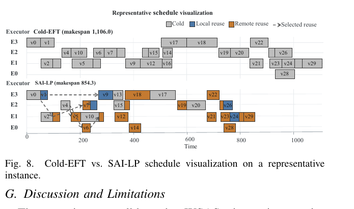
5.7 讨论与局限
实验验证了 WSAS 抽象在根据真实 serving-system measurement 校准的实例上有效，但不是生产级 deployed serving stack。论文假设 workflow DAG、executor eligibility、communication delays 和 reuse candidates 在调度前已知，并抽象掉跨 workflow 的 batching interference、cache eviction、concurrent-workflow queueing 和 time-varying network contention。
结果显示，state-aware scheduling 在 cold-only baselines 上有显著提升，LP-guided insertion 在 workload 包含 nonlocal reuse 和 parallel ready tasks 时尤其有用。当 immediate reuse 已解释大部分收益时，简单 greedy reuse 在 makespan 上仍有竞争力，但 remote state cost 更高。下一步自然方向是把 WSAS 与 online admission control、runtime cache management 和 serving policies 集成。
6 结论
本文研究 heterogeneous inference executors 上多智能体 LLM workflow 的 workflow-state-aware scheduling，把 task placement 与 reusable runtime state 的耦合形式化为 WSAS 问题，并证明其强 NP-completeness。论文提出 SAI-LP，一种 LP-guided state-affinity insertion scheduler，结合 relaxed placement-reuse guidance、constructive scheduling 和 bounded bottleneck refinement。实验表明，SAI-LP 的 normalized makespan 为 0.903，优于 Cold-EFT 的 1.000 和 HEFT-Cold 的 0.956。未来工作将评估更真实的 agent-workflow traces，并把该方法与 runtime cache management、admission control 和 online serving policies 集成。
参考文献
参考文献属于学术元数据，作者姓名、论文题名、会议名和系统名按原文保留；完整参考文献页图如下。
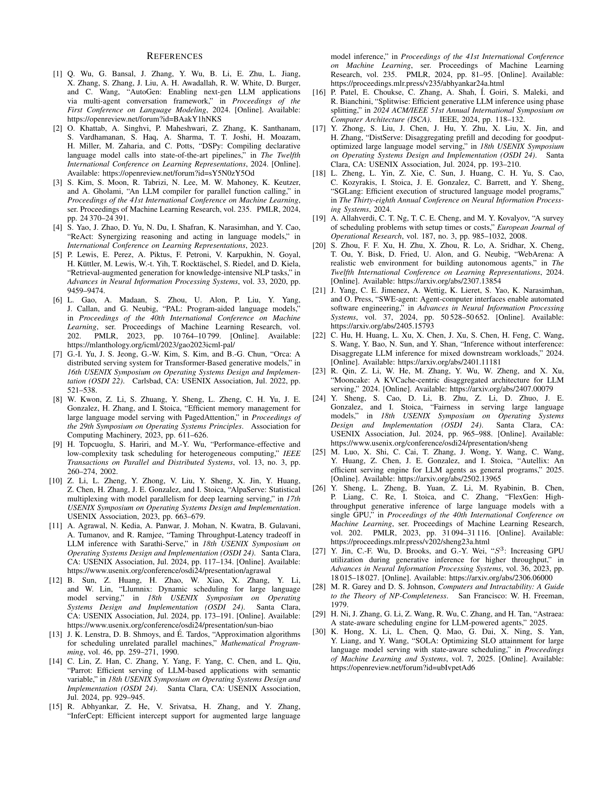